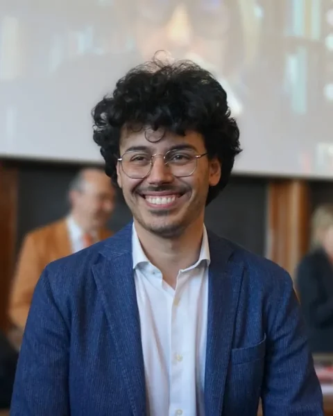

CIAO, SONO
Alessio Silvestrino
Sono sempre stato affascinato dal rapporto che si crea tra le persone e gli oggetti.
Progetto da quando ho memoria: è un gesto che mi viene naturale e il modo in cui provo a dare forma allo spazio che mi circonda, soprattutto quando può migliorare l’esperienza di chi lo vive.
- Formazione
- Cresciuto a Firenze, mi sono laureato in Design del Prodotto Industriale e poi in Advanced Design all’Alma Mater Studiorum – Università di Bologna.
- Specializzazione
- Modellazione 3D, prototipazione rapida e modellistica, dal primo volume fino all’oggetto finito.
- Esperienza
- Dieci anni di produzione additiva (FDM, pellet, resina MSLA, LDM, SLM), con servizi di stampa 3D per privati e lavoro in aziende del settore.

Tecnologie diverse,
la stessa curiosità.
Da dieci anni lavoro con FDM, pellet, resina MSLA, LDM e SLM. Continuo a sperimentare perché ogni tecnologia, materiale e progetto porta con sé qualcosa di nuovo da imparare.
Hai un’idea da condividere?